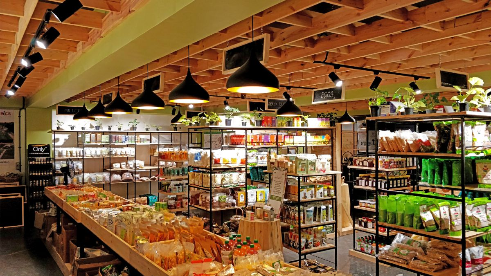

sustainable agricultural system that uses ecologically based pest controls and biological fertilizers derived largely from animal and plant wastes and nitrogen-fixing cover crops. Modern organic farming was developed as a response to the environmental harm caused by the use of chemical pesticides and synthetic fertilizers in conventional agriculture, and it has numerous ecological benefits.vertical farming vertical farmingSee all videos for this article Compared with conventional agriculture, organic farming uses fewer pesticides, reduces soil erosion, decreases nitrate leaching into groundwater and surface water, and recycles animal wastes back into the farm. These benefits are counterbalanced by higher food costs for consumers and generally lower yields. Indeed, yields of organic crops have been found to be about 25 percent lower overall than conventionally grown crops, although this can vary considerably depending upon the type of crop. The challenge for future organic agriculture will be to maintain its environmental benefits, increase yields, and reduce prices while meeting the challenges of climate change and an increasing world population.
